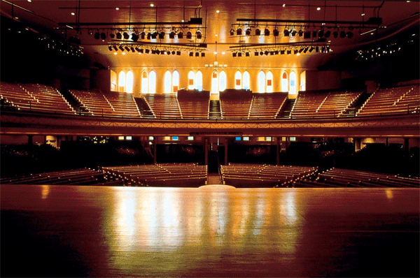
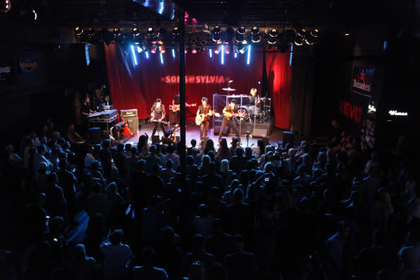
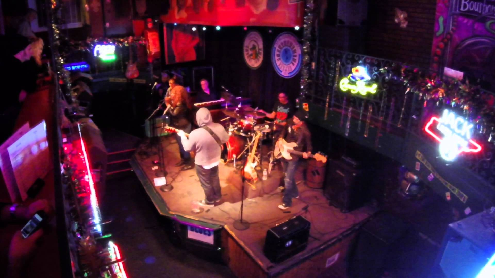

The Top Five Music Venues in Nashville
Ryman Auditorium
If you’re looking to check out some live music in Nashville, the Ryman Auditorium is a great place to start. Not only do they have great shows most nights, they also have a shop and they offer tours. Performers change each night, so make sure to check out their website before going. Heard of the Grand Ole Opry? Here is one of the locations where it takes place.
Ryman Auditorium - Official Site
Location:
116 Fifth Avenue North
Nashville, TN 37219
Grand Ole Opry

Another location where you can catch the Grand Ole Opry? At the Grand Ole Opry House. For the majority of the year (February to October), the Grand Ole Opry House is home to the Grand Ole Opry show. They hold other shows/events on occasion, but their focus is the Grand Ole Opry.
Grand Ole Opry - Official Site
Location:
2804 Opryland Drive
Nashville, TN 37214
The Bluebird Cafe

At the Bluebird Café, you can enjoy a selection of appetizers, sandwiches, and salads, while listening to live music. Reservations can only be made online, with a $3 service fee per person. There are multiple shows a night, so check out the calendar online to make sure you’re arriving on time.
The Bluebird Cafe - Official Site
Location:
4104 Hillsboro Pike
Nashville, TN 37215
Exit/In
Exit/In strives to be an area where non-country artists can get their start. They want to include all different genres of music, as Nashville is predominantly country music. Exit/In has fought for its place as outsiders within Nashville’s live music scene.
Location:
2208 Elliston Place
Nashville, TN 37203
Bourbon Street Blues and Boogie Bar
Bourbon Street Blues and Boogie Bar is a New Orleans themed blues bar in Nashville, TN. Music is played all day, every day at this bar. They serve authentic Cajun food, cold beer and signature cocktails. Just be ready to dance because they are an intimate club that packs out quickly.
Bourbon Street Blues and Boogie Bar - Official Site
Location:
220 Printers Alley
Nashville, TN 37201